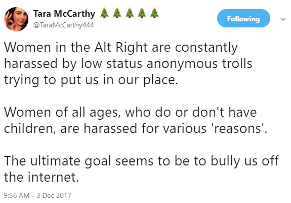
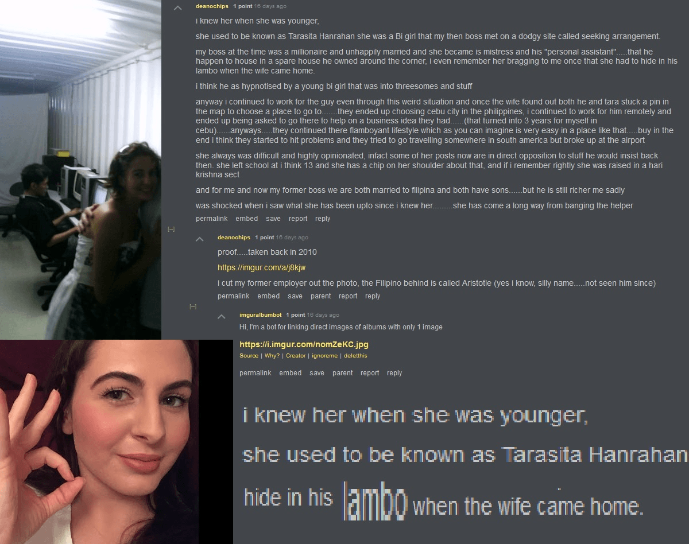
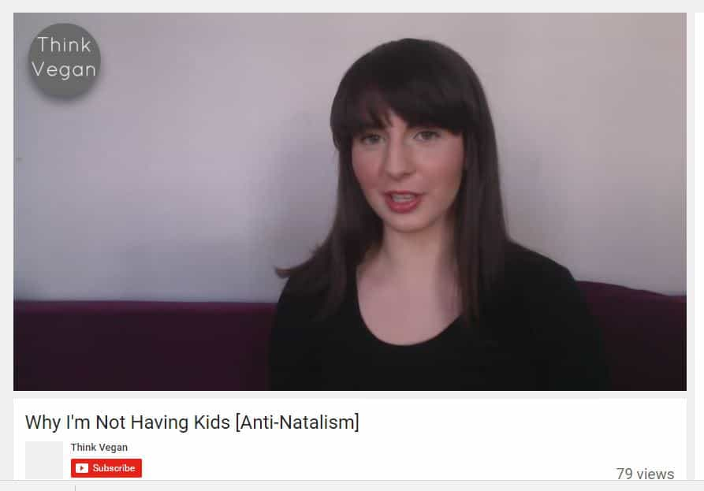

In the past year, one of the biggest trends in the alternative media has been the rise of female personalities who advocate traditional values and right-wing politics. Figures such as Brittany Pettibone, Lauren Southern, Faith Goldy, Tara McCarthy and countless others have won dedicated followings thanks to their combination of nationalist talking points and attractive looks. Some have argued that this is a good thing, since it is impossible for any movement to achieve success if only men support it.
While I am not opposed to women participating in politics per se, the reality is that the majority of these “tradthots” are wolves in sheep’s clothing. Beyond being unoriginal and bland, tradthots like McCarthy, Southern, and more appear to be subverting nationalism for their own ends. They are converging the alternative media into leftism, no different than what SJWs have done to video games and other industries.
While some alternative media figures such as ROK publisher Roosh V and Daily Stormer publisher Andrew Anglin are trying to push back against the tradthot invasion, the number of white knights and beta orbiters defending them has reached critical mass.
The best you can say about many of these women is that they are looking to make money off of sexless chumps, but if you scratch the surface, a darker picture emerges.
Thot-Provoking Content

ROK readers and contributors are more aware than most that tradthots are not to be trusted. For example, some time ago, I was involved with a woman who called herself “alt right” and who claimed to want a traditional marriage, yet was also a bisexual alcoholic with a rep for cheating on her boyfriends. Following our breakup, she began dating a left-wing skinhead, then suddenly disavowed the alt right for being too pro-Trump and “anti-Semitic.”
The dirt that is now coming out on popular tradthots fits the same pattern. For example, it was recently revealed that Lauren Southern, darling of the alternative media, used to exclusively date a half-black man who voted for Trump. According to a friend who knew Southern when she was younger, she went psycho stalker after one of her boyfriends dumped her for a brown girl, then became rabidly anti-Muslim/anti-immigrant in response.
In her book Barbarians: How the Baby Boomers, Immigration, and Islam Screwed My Generation, Southern brags about her previous life as a glorified camwhore, claiming that “I don’t masturbate to anime characters. I dress up like them and guys masturbate to me.”
It’s clear that Southern views nationalists in the same way she viewed anime fans: suckers to make money off of. She’s also incredibly sensitive to critics who ask her why she isn’t married yet despite being a traditionalist. In a recent video, “Why I’m Not Married,” Southern tried to rationalize her lifestyle by claiming that her current work is too “important” for her to settle down. She also banned numerous people (including me) who criticized her, even if their criticism was polite and reasonable.
Tara McCarthy is a more blatant example of how tradthots are feminists in disguise. A YouTube host and podcaster, McCarthy recently commented on Twitter that “the Alt Right is not about fighting feminism, it’s about taking control of our demographics,” ignoring the fact that feminism is a major reason why white birthrates are in freefall. After ROK publisher Roosh highlighted her idiocy, McCarthy began whining about how she was being “harassed” online, just like feminists do:

McCarthy also has a history of degeneracy and rapid ideological shifts. As recently as last year, she ran a YouTube channel called Think Vegan, where she espoused socialist and feminist views. No one goes from being a socialist to alt right in that short a period of time unless they’re a grifter or insane. McCarthy also identified as an antinatalist and proudly declared that she would never have children, a major red flag as all of the antinatalist women I’ve encountered (admittedly only three) were batshit insane.
To make matters worse, McCarthy used to be known among her friends for her bisexuality and her hedonistic lifestyle, and enjoyed sleeping with married men (click to expand):

These are far from the worst things that tradthots have done, not even close. I’m privy to a lot of information about the alt lite’s/alt right’s inner workings.
Other, lesser-known tradthots such as Lauren Rose exhibit many of the same issues as Southern and McCarthy: crypto-feminist views, shaming language, and crying about “harassment.” They are aided by white knights such as Culture of Critique author and boomer Kevin MacDonald and Nick J. Fuentes’ eternal second banana, James Allsup. While some tradthots can be successfully shamed into quitting (for example, as of this writing, Tara McCarthy has made her Twitter private and deleted most of her YouTube videos), the rot may be too deep to get them all out.
Say No To Findom Nationalism

For me, watching the tradthot infestation of the alt lite/alt right is depressing deja vu.
Several years back, I watched as the manosphere went down a similar path: “red pill women” suddenly started popping up everywhere, blogging about how much they enjoyed being traditional housewives cooking for their husbands and giving them blowjobs. To no one’s surprise, most of them turned out to be psychotic frauds. I even invented a blog written by a “red pill woman” in order to make fun of them and their pathetic male fans.
Like the manosphere before it, the rise of the tradthot has proven that most alt lite/alt right men are frauds themselves. Any man who claims to believe in nationalism and patriarchy would never get his political opinions from a promiscuous woman. As my friend the Bechtloff puts it, tradthots are nothing more than glorified findom.
Return of Kings is proud to be one of the few dissident outposts that is unabashedly anti-thot and pro-patriarchy. Unlike the tradthots and their male paypigs, when we say we’re about traditional masculinity and femininity, we mean it.
Read More: Anti-Defamation League’s Hate List Puts Alt Right And Alt Lite Figures At Risk Of Leftist Violence


{kind=link}